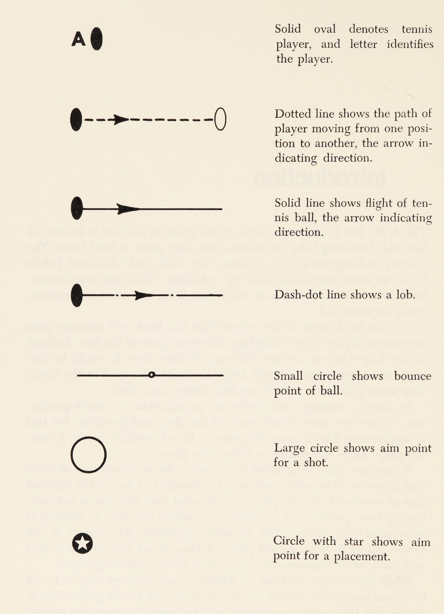

Tác phẩm của William F. Talbert & Bruce S. Old
Mục Lục Tác Phẩm
Lời Tựa Của Arthur Ashe
Lần đầu tiên tôi đọc cuốn sách The Game of Doubles in Tennis là khi tôi khoảng mười sáu tuổi. Người thầy quần vợt của tôi, Bác sĩ R. W. Johnson, đã trực tiếp yêu cầu tôi phải đọc nó. Thầy đã nghiền ngẫm cuốn sách này, và ở độ tuổi của thầy lúc bấy giờ (khoảng năm mươi tuổi), thầy nhận thấy đây là một công trình vô giá giúp thầy giành chiến thắng trong hầu hết các trận đánh đôi với những người bạn đồng niên. Đáng lẽ ra tôi phải đọc lại cuốn sách này nhiều lần hơn nữa trong sự nghiệp của mình.
Nỗi thất vọng lớn nhất trong sự nghiệp thi đấu của tôi chính là việc thiếu vắng một bảng thành tích đánh đôi thực sự đáng ghen tị. Hewitt - McMillan, Newcombe - Roche, Emerson - Stolle, Lutz - Smith, Trabert - Seixas, Hoad - Rosewall — một vài trong số những cặp đôi vĩ đại nhất mà tôi từng được tận mắt chứng kiến — dù vô tình hay hữu ý, đều áp dụng triệt để những nguyên lý nền tảng được trình bày rực rỡ và rõ ràng trong cuốn sách này. Có thể những tay vợt ấy đã đọc các cuốn sách tương tự hoặc được tôi luyện những gì họ biết qua thực chiến khắc nghiệt. Nhưng có một điều hoàn toàn chắc chắn: tồn tại một giáo trình chuẩn mực mang tên "Quần Vợt Đánh Đôi" — và cuốn sách này chính là bộ giáo trình định nghĩa môn học ấy.
Khi tôi nhìn lại những cặp đôi vĩ đại, sự khác biệt giữa họ và những đôi phong trào hay bán chuyên không nằm ở việc họ tung ra những cú đánh bạt mạng, mà nằm ở việc họ luôn thấu hiểu trật tự không gian của sân đấu. Họ di chuyển như một khối thống nhất, họ bọc lót cho nhau trước khi đối thủ kịp vung vợt, và họ hiểu rõ từng góc phản xạ của quả bóng. Bill Talbert và Bruce Old đã mổ xẻ trận địa đánh đôi với độ chính xác của những nhà khoa học. Dù bạn là một tay vợt trẻ đang khao khát vươn ra thế giới hay một người chơi phong trào muốn cùng bạn bè tận hưởng niềm vui chiến thắng cuối tuần, cuốn sách này sẽ mãi mãi thay đổi cách bạn nhìn nhận một trận đấu đôi.
— Arthur Ashe
Nhà vô địch Wimbledon & US Open
Lời Tựa Của Virginia Wade
Sự phối hợp đồng đội nhịp nhàng chính là chìa khóa mở ra mọi thành công trong quần vợt đánh đôi, và cặp bài trùng Bill Talbert cùng Bruce Old đã mang đến cho chúng ta một cú giao bóng ăn điểm trực tiếp (ace) ngoạn mục với cuốn sách The Game of Doubles in Tennis. Những tài liệu chuẩn mực như thế này là vô cùng hiếm hoi trong kho tàng thể thao thế giới.
Bắt lưới cắt góc (poaching), lốp bóng phản công, chiến thuật giao bóng, kiểm soát mặt lưới, phòng thủ cuối sân — tất cả những gì bạn khao khát học hỏi về đánh đôi đều hiện diện đầy đủ tại đây. Cách tiếp cận của các tác giả mang tính thực tế tuyệt đối, khoa học và logic; các chỉ dẫn chiến thuật cực kỳ dễ hiểu, mạch lạc và sẵn sàng để bạn đưa ngay vào buổi tập luyện tiếp theo.
Nếu bạn thấy tôi tràn đầy nhiệt huyết khi nói về cuốn sách này, đó là bởi vì tôi thực sự tin tưởng sâu sắc rằng đây là một tác phẩm vĩ đại mà bất kỳ người chơi nào cũng sẽ gặt hái được giá trị cải thiện phong độ tức thì.
— Virginia Wade, O.B.E.
Nhà vô địch Wimbledon & US Open Đơn và Đôi Nữ
Lời Dẫn Nhập Của Tác Giả
Đây là cuốn sách chuyên khảo đầu tiên từng được biên soạn dành riêng cho nghệ thuật đánh đôi trong lịch sử quần vợt thế giới. Để "đứa con tinh thần" này ra đời, chúng tôi đã phải trải qua tròn bảy năm lao động miệt mài và nghiêm cẩn. Từ Thư viện Quốc hội Hoa Kỳ tại Washington cho tới các thư viện công cộng lớn tại Boston, New York và Cleveland đều được chúng tôi tra cứu thấu đáo từ trên xuống dưới. Tiếp đó, hàng nghìn dữ liệu chi tiết của các trận chung kết Davis Cup và giải vô địch quốc tế đã được thống kê tỉ mỉ, nhằm đảm bảo rằng mỗi sơ đồ, mỗi phân tích chiến thuật gửi tới bạn đọc đều dựa trên nền tảng sự thật khách quan chứ không phải chỉ là cảm tính cá nhân.
Hy vọng chân thành nhất của các tác giả là cuốn sách này sẽ nâng tầm trải nghiệm, sự say mê và thấu cảm sâu sắc của bạn khi thi đấu cũng như khi theo dõi những trận đánh đôi đỉnh cao. Biết đâu một ngày nào đó, những nguyên lý hình học này sẽ giúp bạn giành lấy chiếc cúp vô địch đầu tiên trong đời. Thậm chí, thật tuyệt vời nếu biết đâu nó có thể giúp đội tuyển nước nhà chinh phục thành công chiếc cúp Davis Cup danh giá!
Trong đánh đôi, chiến lược và chiến thuật đóng vai trò sống còn tương đương với kỹ thuật tạo lực cú đánh. Một cặp đôi sở hữu kỹ thuật cơ bản ở mức khá nhưng có đầu óc chiến thuật sắc bén và sự ăn ý tuyệt đối sẽ luôn đánh bại một cặp đôi gồm hai ngôi sao đơn sở hữu cú đánh sấm sét nhưng giẫm chân lên nhau. Để minh họa trực quan 112 tình huống thực chiến kinh điển nhất, chúng tôi sử dụng hệ thống sơ đồ chuẩn mực quốc tế dưới đây.
Bảng Ký Hiệu Chuẩn Dùng Trong 112 Sơ Đồ Chiến Thuật

• B (Server): Người giao bóng.
• A (Net Man): Người đứng lưới bên giao bóng.
• M (Receiver): Người trả giao bóng.
• N (Modified Net Man): Người đứng lưới bên trả giao bóng.
• Hình bầu dục đen: Vị trí xuất phát của đấu sĩ mang chữ cái tương ứng.
• Đường nét đứt có mũi tên: Quỹ đạo di chuyển của vận động viên.
• Đường nét liền có mũi tên: Quỹ đạo bay của quả bóng tennis.
• Đường gạch chấm (dash-dot): Cú lốp bóng bổng qua đầu đối thủ.
• Vòng tròn nhỏ rỗng: Điểm bóng nảy trên mặt sân (bounce point).
• Vòng tròn lớn có viền: Vị trí nhắm bóng chiến thuật (aim point).
• Vòng tròn có ngôi sao trắng: Điểm dứt điểm ăn điểm trực tiếp (winner placement).
Cơn Mơ Ngọt Ngào (Sweet Dreams)
Bất kỳ ai từng bước chân vào sân đấu đôi trong môn quần vợt đều nhanh chóng nhận ra rằng đây là hình thức thể thao hấp dẫn và cuốn hút bậc nhất. Nếu bạn đã chơi đánh đôi, bạn chắc chắn thấu hiểu những giờ phút sảng khoái vô tận và tình bằng hữu khăng khít mà nó mang lại. Còn nếu bạn chưa từng chơi, bạn sẽ cảm thấy vô cùng biết ơn nếu bắt đầu ngay từ hôm nay.
Tại sao chúng tôi lại dành những lời ca ngợi nồng nhiệt đến vậy cho quần vợt đánh đôi? Lý do thực sự rất phong phú:
- Đánh đôi phù hợp cho mọi lứa tuổi và giới tính: Từ những cô bé cậu bé sáu tuổi cho tới các cụ già ngoài sáu mươi, bảy mươi tuổi đều có thể cùng thi đấu và tận hưởng.
- Đánh đôi là trò chơi của trí tuệ và sự tinh tế: Nó đòi hỏi khả năng tư duy chiến thuật, đọc tình huống tương đương — thậm chí vượt trội hơn — so với sức mạnh cơ bắp thuần túy.
- Giảm thiểu chấn thương và kéo dài tuổi thọ thể thao: Không gian sân được chia đôi giúp người chơi không phải bứt tốc vắt kiệt thể lực như đánh đơn, thay vào đó tôn vinh sự khéo léo và cảm giác bóng.
- Tình đồng đội và sự kết nối xã hội: Không có cảm giác nào tuyệt vời hơn khi bạn cùng người đồng đội chia sẻ một cái đập tay ăn mừng sau một pha phối hợp giăng bẫy bắt lưới hoàn hảo.
Tuy nhiên, đánh đôi cũng là môn thể thao thường xuyên chứng kiến những "cơn ác mộng" chiến thuật nếu người chơi không nắm vững các nguyên tắc hình học cơ bản. Một trong những sai lầm phổ biến và tai hại nhất được chúng tôi gọi là "Đường Chéo Sân Mở Rộng" (The Open Diagonal), được phân tích chi tiết trong sơ đồ mở màn dưới đây.
Lịch Sử Quần Vợt Đánh Đôi (History)
Mọi chuyện bắt đầu tại nước Anh vào năm 1873. Đó là năm mà môn quần vợt trên cỏ (lawn tennis) được phát minh bởi Thiếu tá Walter Clopton Wingfield. Bản mô tả đầu tiên về trò chơi được ghi lại trong một cuốn sách nhỏ mang tên The Major's Game of Lawn Tennis, dành tặng cho những người bạn tham gia buổi dạ tiệc tại Nantclwyd vào tháng 12 năm 1873.
Trong bản tóm tắt thú vị của mình, Thiếu tá Wingfield đã truy nguyên nguồn gốc của quần vợt về thời Hy Lạp cổ đại dưới tên gọi Sphairistike. Khi giải vô địch Wimbledon đầu tiên được tổ chức vào năm 1877 tại All England Croquet and Lawn Tennis Club, nội dung thi đấu ban đầu chỉ dành cho đánh đơn nam trên mặt sân hình đồng hồ cát (hourglass). Nhưng chỉ một thời gian ngắn sau đó, người ta nhận thấy sự cuốn hút vượt trội khi có bốn người cùng thi đấu trên sân.
Để thích ứng với việc có bốn đấu sĩ, kích thước sân thi đấu đã được cải tiến mang tính cách mạng: hai dải hành lang (alleys) rộng 4.5 feet (1.37 mét) được bổ sung vào hai bên, mở rộng chiều ngang mặt sân từ 27 feet (8.23m) lên 36 feet (10.97m). Diện tích sân tăng thêm đúng 33.3%, nhưng số lượng tay vợt tăng gấp đôi. Chính sự thay đổi này đã định hình vĩnh viễn hình học của quần vợt đánh đôi: các góc đánh trở nên hiểm hóc hơn, cự ly tiếp cận lưới ngắn lại và tầm quan trọng của trung lộ được nâng lên hàng đầu.
Trải qua hơn một thế kỷ phát triển, lịch sử quần vợt đã chứng kiến những cặp đôi huyền thoại bất tử:
- Anh em nhà Renshaw (William & Ernest Renshaw) thập niên 1880: Những người tiên phong phát minh ra kỹ thuật lên lưới volley và smash trên không.
- Anh em nhà Doherty (Reggie & Laurie Doherty) đầu thế kỷ 20: Biểu tượng của sự thanh lịch, kỹ thuật cắt bóng và sự phối hợp hoàn hảo.
- Norman Brookes & Anthony Wilding: Đưa cúp Davis Cup về vùng đất châu Đại Dương với lối đánh tấn công uy lực.
- John Bromwich & Adrian Quist: Bậc thầy điều phối bóng điểm rơi và cú đánh hai tay trứ danh của Bromwich.
- Bill Talbert & Gardnar Mulloy: Cặp đôi giành 4 chức vô địch Quốc gia Mỹ, thiết lập nên các quy chuẩn chiến thuật đánh đôi hiện đại.
- Ken Rosewall & Lew Hoad: Cặp bài trùng tuổi thiếu niên làm khuynh đảo làng quần vợt thế giới thập niên 1950.
- Rod Laver & Roy Emerson, John Newcombe & Tony Roche, Stan Smith & Bob Lutz: Đỉnh cao của kỷ nguyên Serve & Volley toàn diện.
Trò Chơi Đánh Đôi (The Game)
Đánh đôi không đơn thuần là một trận đánh đơn có thêm hai người đứng phụ họa trên sân. Đó là một môn thể thao hoàn toàn khác biệt, với hệ thống quy luật hình học, nhịp độ và tâm lý riêng biệt. Để thành công, người chơi phải rũ bỏ hoàn toàn tư duy của một đấu sĩ đơn độc và tiếp thu tư duy của một khối liên kết hữu cơ.
1. Hình Học Mặt Sân & Bức Tường Lưới
Trong đánh đơn, mục tiêu của bạn là khai thác hai góc xa cuối sân để đẩy đối thủ vào thế rượt đuổi kiệt sức. Nhưng trong đánh đôi, sự hiện diện của hai đấu sĩ phòng thủ trên lưới khiến cho việc đánh bóng sâu về cuối sân không còn là giải pháp tối ưu. Trọng tâm chiến thuật chuyển dịch hoàn toàn lên cuộc chiến chiếm lĩnh mặt lưới. Cặp đôi nào làm chủ được vị trí cách lưới từ 2 đến 3 mét sẽ kiểm soát hơn 80% cơ hội kết thúc pha bóng.
2. Nguyên Tắc Chiếc Dây Thun Vô Hình
Hãy hình dung giữa bạn và người đồng đội có một sợi dây thun đàn hồi dài khoảng 3 đến 4 mét nối liền hai hông. Khi người này di chuyển sang trái để đón bóng, người kia phải lập tức trượt sang trái theo nhịp tương ứng để khép chặt trung lộ. Nếu một người dâng lên lưới, người kia cũng phải đồng bộ tiến lên để tạo thành một phòng tuyến ngang kiên cố. Sai lầm chết người nhất là một người đứng sát lưới trong khi người kia kẹt lại ở vạch cuối sân — tạo nên khoảng trống mênh mông ở khu vực giao nhau (No Man's Land) cho đối thủ tha hồ bắn phá.
3. Trung Lộ — Vùng Đất Của Sự Do Dự
Hơn một nửa số điểm thắng trong các trận đánh đôi đỉnh cao không đến từ các cú đánh bạt mạng vào góc sân, mà đến từ các cú đánh chìm xé thẳng vào giữa hai đối thủ. Trung lộ là nơi gây ra sự do dự tai hại nhất: ai sẽ đánh quả này? "Của tôi" hay "Của bạn"? Nếu hai bạn không có sự phân công rõ ràng từ trước (người có cú thuận tay ở giữa ưu tiên đón bóng), quả bóng sẽ bay qua khoảng trống trong ánh nhìn bất lực của cả hai.
Cú Giao Bóng (The Serve)
Trong quần vợt đánh đôi, cú giao bóng không phải là một nỗ lực cá nhân nhằm ghi điểm trực tiếp (ace) bằng tốc độ sấm sét. Cú giao bóng được định nghĩa là phát súng mở màn chiến dịch dâng lên chiếm lưới của toàn đội. Một cú giao bóng một đạt vận tốc cực cao nhưng tỷ lệ thành công chỉ 40% là một thảm họa chiến thuật; ngược lại, một cú giao bóng xoáy nảy có độ sâu và độ chính xác đạt tỷ lệ 75% sẽ biến đội bạn thành một pháo đài bất khả xâm phạm.
1. Ba Vị Trí Nhắm Bóng Chiến Thuật
Trên mỗi ô giao bóng, người giao bóng B phải lựa chọn có chủ đích một trong ba điểm rơi:
- Điểm 1 (Góc chữ T trung lộ): Vị trí an toàn và mang tính chiến thuật cao nhất. Bóng đi qua phần thấp nhất của lưới, triệt tiêu góc trả bóng chéo sân nguy hiểm của người nhận và tạo điều kiện lý tưởng cho người đứng lưới A bắt bài (poach).
- Điểm 2 (Thẳng vào cơ thể người nhận - Body serve): Khóa chặt tầm vung tay của người nhận, khiến họ bị giật mình và thường trả bóng bồng bềnh lên cao vừa tầm volley dứt điểm.
- Điểm 3 (Góc rộng xé biên): Mở toang góc sân của đối thủ. Chỉ nên sử dụng khi người nhận đứng quá sâu về trung lộ hoặc có quả trái tay vụng về. Lưu ý rằng giao bóng xé biên sẽ mở ra góc trả bóng dọc dây hành lang rất rộng nếu người đứng lưới A không cảnh giác.
2. Nhịp Chân Tràn Lưới & Quả Split-Step Sống Còn
Sai lầm phổ biến nhất của người giao bóng là đứng yên sau vạch cuối sân để chiêm ngưỡng cú giao của mình. Ngay khi bóng rời mặt vợt, người giao bóng B phải lập tức chạy nước rút hướng về phía lưới. Khi người nhận M chuẩn bị tiếp xúc bóng, người giao bóng B bắt buộc phải thực hiện bước nhảy cân bằng (split-step) để hãm đà quán tính, hạ thấp trọng tâm và sẵn sàng bứt tốc sang bất kỳ hướng nào để xử lý quả volley đầu tiên.
3. Tín Hiệu Bắt Bài (Poaching Signals) & Đội Hình Dị Biệt
Một đội đôi xuất sắc không bao giờ thi đấu trong im lặng. Trước mỗi điểm giao bóng, người đứng lưới A sẽ dùng bàn tay đặt sau lưng để ra tín hiệu cho người giao bóng B: giao bóng vào đâu (chữ T hay biên) và A có băng cắt bắt bài hay giữ nguyên vị trí. Ngoài ra, việc biến hóa đội hình sang Đội Hình Úc (Australian Formation) hoặc Đội Hình Chữ I (I-Formation) sẽ bẻ gãy hoàn toàn nhịp điệu trả bóng quen thuộc của đối thủ.
Cú Trả Giao Bóng (The Return of Service)
Nhiều chuyên gia khẳng định rằng cú trả giao bóng chính là đòn đánh khó khăn và quyết định nhất trong đánh đôi. Đội giao bóng nắm giữ thế chủ động và đang lao lên lưới như một cơn lốc; người trả giao bóng M chỉ có chưa đầy một giây để vừa phán đoán hướng bóng, vừa tìm kiếm khoảng trống giữa hai bức tường phòng ngự của đối phương.
1. Mục Tiêu Tối Thượng: Đánh Bóng Chìm Xuống Chân
Quy tắc vàng số 1 khi trả giao bóng: Đừng cố gắng tung ra một cú đánh winner ăn điểm ngay lập tức. Mục tiêu tiên quyết của bạn là đưa bóng qua lưới ở độ cao thấp nhất có thể, buộc người giao bóng B đang lao lên phải đánh quả volley đầu tiên ở vị trí thấp dưới mép lưới. Khi đối phương phải xúc bóng từ dưới lên, quả bóng tiếp theo sẽ bay bồng bềnh — tạo cơ hội vàng cho người đứng lưới của bạn (N) hoặc chính bạn dứt điểm ở nhịp sau.
2. Bốn Tuyến Trả Bóng Chiến Thuật
- Trả bóng chéo sân sâu (Crosscourt Drive): Con đường an toàn nhất. Lưới ở giữa sân thấp hơn hai bên cột cọc đúng 6 inches (15cm), và khoảng cách đường chéo sân dài hơn đường thẳng gần 1.5 mét, cho bạn biên độ an toàn cực lớn.
- Cú dằn bóng ngắn vào chân (Short Dink to Feet): Kỹ thuật đỉnh cao của các bậc thầy như John Bromwich và Ken Rosewall. Quả bóng rơi chìm ngay mép vạch giao bóng, biến đối thủ thành kẻ bất lực trên lưới.
- Cú lốp bóng tấn công (Offensive Lob): Vũ khí hủy diệt người đứng lưới A nếu họ có thói quen chồm quá sát vào mép lưới để bắt bài. Một cú lốp xoáy qua đầu sẽ đảo ngược hoàn toàn vị thế: đội bạn tràn lên lưới, đẩy đối thủ chạy tháo lui về cuối sân.
- Đòn dọc dây hành lang (Down-the-Alley): Đòn trừng phạt thẳng tay khi người đứng lưới A di chuyển bắt bài quá sớm. Chỉ cần một cú passing shot dọc dây hiểm hóc, bạn sẽ khiến A không bao giờ dám tự ý nhảy cắt mặt trong suốt phần còn lại của trận đấu.
Cuộc Chiến Trên Lưới (Net Play)
Không thể nào nhấn mạnh hết tầm quan trọng sống còn của lối chơi trên lưới trong quần vợt đánh đôi. Trong các trận đấu đỉnh cao, hơn 85% các điểm thắng được kết thúc bằng một quả volley hoặc smash trên lưới. Người chơi nào làm chủ được mặt lưới sẽ làm chủ vận mệnh của cả trận đấu.
1. Quả Volley Đầu Tiên (The First Volley)
Quả volley đầu tiên của người giao bóng khi vừa lao lên từ vạch cuối sân là cú đánh bản lề định đoạt điểm số. Nếu quả volley đầu tiên bị ngắn hoặc bồng bềnh, "mái nhà sẽ sập xuống đầu bạn" khi đối thủ phản công dồn dập. Ngược lại, một quả volley đầu tiên cắn sâu và chìm vào trung lộ hoặc ép người nhận vào góc sân sẽ dập tắt mọi hy vọng của đối phương.
2. Kho Tàng Kỹ Thuật Volley Đỉnh Cao
- Volley Sâu Ép Trung Lộ (Deep Center Volley): Triệt tiêu góc phản công của cả hai đối thủ, đẩy họ lùi sâu sau vạch baseline.
- Volley Góc Chéo Sân (Angle Volley): Khóa điểm số bằng cách mượn lực bóng đưa ra sát hàng rào ngoài sân.
- Bỏ Nhỏ Trên Lưới (Drop Volley): Thả lỏng cổ tay, hãm lực hoàn hảo khi đối thủ bị ghim chặt ở vạch cuối sân.
- Lốp Bóng Trên Lưới (Lob Volley): Pha bóng nghệ thuật giải tỏa áp lực trong những cuộc đấu súng volley giáp lá cà tốc độ cao ở cự ly 2 mét.
- Cú Smash Trên Không (Overhead Smash): Búa tạ dứt điểm điểm số. Bí quyết nằm ở việc di chuyển chân lùi nghiêng người (side-shuffle), không bao giờ lùi ngửa người thẳng lưng.
3. Nghệ Thuật Bắt Bài (The Poach) & Bẫy Giăng Lưới (Draw Plays)
Người đứng lưới A không bao giờ được phép biến mình thành "bức tượng vô hồn". Bạn phải liên tục đe dọa tầm mắt đối thủ bằng những bước nhử giả (fake moves), chớp thời cơ khi người trả giao bóng vừa cúi đầu nhìn bóng để nhảy cắt mặt qua trung lộ tung đòn kết liễu. Và khi kế hoạch bắt bài bị đối thủ hóa giải, người đồng đội phải lập tức thực hiện động tác bọc lót đổi cánh (the switch) để bịt kín lỗ hổng sau lưng.
Lối Đánh Cuối Sân (Base Line Play)
Mặc dù các điểm số trong đánh đôi được kết liễu trên lưới, nhưng một cặp đôi hoàn hảo bắt buộc phải xây dựng được một hệ thống phòng thủ kiên cường từ cuối sân. Khi đội bạn gặp bất lợi, bị ép vào thế thủ hoặc đối phương sở hữu những tay giao bóng quá áp đảo, đội hình hai người cùng lùi cuối sân (Both Back Formation) sẽ là lá chắn cứu nguy thần kỳ.
Từ cuối sân, cú lốp bóng (lob) trở thành vũ khí chiến lược tối thượng. Nó cho bạn thời gian tái lập trật tự đội hình, buộc đối thủ phải liên tục di chuyển giật lùi để đập bóng smash trong sự ức chế tâm lý, và mở ra thời cơ phản công thần tốc khi đối thủ tung ra một quả smash lỗi.
Tổng Kết & 10 Điều Răn Vàng Trong Đánh Đôi
Có những người nói rằng: "Quần vợt chỉ là một trò chơi giải trí, tại sao phải suy nghĩ và tính toán phức tạp đến thế?" Nhưng thực tế chứng minh rằng, chơi quần vợt một cách thông minh và chuẩn xác mang lại niềm vui sướng lớn hơn gấp bội so với việc đánh bóng vô định và liên tục mắc lỗi ngớ ngẩn.
10 Điều Răn Vàng Của Bill Talbert Cho Mọi Tay Vợt Đánh Đôi:
- Luôn ưu tiên tỷ lệ giao bóng một vào sân: Đừng tìm kiếm những cú ace may rủi; hãy giao bóng sâu, có xoáy và đưa bóng vào cuộc an toàn để cùng đồng đội dâng lên chiếm lưới.
- Giao bóng xong phải lập tức lao lên lưới: Đừng đứng chôn chân ở vạch cuối sân; hãy thực hiện bước split-step cân bằng ngay trước khi đối thủ chạm bóng.
- Trả giao bóng chìm xuống chân đối thủ: Đừng cố đánh winner từ quả trả giao; hãy ép người giao bóng đang dâng lên phải volley từ dưới mép lưới.
- Người đứng lưới phải luôn chủ động di chuyển: Hãy tạo áp lực tâm lý thường trực lên người trả bóng bằng những bước nhử và cú bắt bài dũng cảm.
- Tấn công vào trung lộ: Khi nghi ngờ, hãy đánh bóng xé thẳng vào giữa hai đối thủ để khoét sâu vào sự do dự và bất đồng ý kiến của họ.
- Di chuyển đồng bộ như chiếc dây thun: Khép chặt cự ly, cùng tiến cùng lùi, không bao giờ để xảy ra tình trạng một người trên lưới một người tít dưới cuối sân.
- Sử dụng cú lốp bóng như một đòn tấn công: Lốp bóng qua đầu người đứng lưới áp sát để lật ngược thế cờ và đẩy đối thủ vào thế rượt đuổi.
- Tuyệt đối không tranh bóng hoặc đổ lỗi cho đồng đội: Một cặp đôi đoàn kết với sự động viên chân thành sẽ mạnh hơn gấp đôi một cặp đôi tài năng nhưng hục hặc.
- Quyết đoán trong tiếng gọi khẩu lệnh: Hô to "CỦA TÔI" (MINE) hoặc "CỦA BẠN" (YOURS) ngay khi bóng vừa rời vợt đối phương để tránh mọi sự va chạm.
- Không bao giờ bỏ cuộc cho tới khi bóng nảy lần thứ hai: Tinh thần chiến đấu quả cảm của Kramer, Sedgman và McGregor trong Hình 112 chính là linh hồn bất tử của nghệ thuật đánh đôi.
Bảng Tra Cứu Thuật Ngữ & Chỉ Mục Song Ngữ Anh - Việt
| Thuật Ngữ Tiếng Anh | Thuật Ngữ Tiếng Việt | Định Nghĩa & Ý Nghĩa Chiến Thuật |
|---|---|---|
| Server (Player B) | Người giao bóng | Người phát bóng mở màn và lập tức tràn lên lưới chiếm lĩnh vị trí tấn công. |
| Net Man (Player A) | Người đứng lưới bên giao | Đứng án ngữ trên lưới ở ô đối diện, chịu trách nhiệm bắt bài (poach) và dứt điểm trung lộ. |
| Receiver (Player M) | Người trả giao bóng | Đứng ở vạch cuối sân đón quả giao bóng, tìm cách dằn bóng chìm vào chân người giao bóng. |
| Modified Net Man (Player N) | Người đứng lưới bên trả | Đứng gần vạch giao bóng, sẵn sàng trừng phạt các quả volley hớ hênh của đối phương. |
| Poach | Bắt bài / Cắt mặt trên lưới | Hành động người đứng lưới bất ngờ băng ngang qua trung lộ để cắt đứt đường bóng của đối thủ. |
| Open Diagonal | Đường chéo sân mở rộng | Khoảng trống thênh thang xuất hiện khi người giao bóng B không chịu dâng lên lưới. |
| First Volley | Quả volley đầu tiên | Cú đánh bản lề của người giao bóng khi vừa lao từ baseline lên gần vạch service line. |
| Drop Volley | Volley bỏ nhỏ | Cú hãm lực cổ tay mềm mại đưa bóng rơi sát mép lưới khi đối thủ đang ở sâu cuối sân. |
| Lob Volley | Volley lốp bóng bổng | Cú hất bóng bổng qua đầu đối thủ ngay từ trên lưới trong các pha đấu súng cự ly gần. |
| Overhead Smash | Cú đập bóng dứt điểm trên đầu | Đòn kết liễu bóng bổng uy lực nhất trong quần vợt đánh đôi. |
| Switch | Hoán đổi cánh bọc lót | Hai đối tác hoán đổi vị trí trái - phải khi một người băng qua bắt bài hoặc đuổi theo bóng lốp. |
| Both Back Formation | Đội hình hai người cùng lùi | Chiến thuật phòng thủ khẩn cấp khi gặp đối thủ giao bóng quá nặng hoặc bị ép sân toàn diện. |
| Australian Formation | Đội hình Úc | Người giao bóng và người đứng lưới đứng cùng một bên sân để triệt tiêu cú trả bóng chéo sân sở trường. |
| I-Formation | Đội hình Chữ I | Người đứng lưới quỳ hoặc cúi thấp ngay trên đường chữ T trung lộ trước khi bóng được giao. |